Top 50 Albums Of 2013 (Part Two)
So here it is, the concluding part of our Top 50 Albums of 2013. If your favourite missed out, was ranked too low, or in the unlikely event that you agree with every single selection, we'd love to hear from you. Heated exchanges about end of year lists are pretty much what comments sections were invented for, after all.
If you want to remind yourself of the first half of this list, records ranked 50 through 26, please click here.
If you loathe the album format and want to look at our Top 40 Tracks of 2013, this is place to go.
Once again, thanks for reading No Ripcord in 2013. We'll see you in the new year.
. . .
25. Charli XCX
True Romance
(Asylum)
True Romance, the major label debut by 20-year-old Charli XCX, combined swirling electronics with street swagger and teen heartache to create one of the year's most individual and compelling pop albums. There are echoes of Gwen Stefani, Grimes, K-pop, and even a Gold Panda sample, but these sounds – and many others – are bent to fit her own thoroughly modern mould. Hip producers Ariel Rechtshaid (Haim, Sky Ferreira) and Patrik Berger (Robyn) give an industrial, neon-lit backing to her sweet vocals and muttered rhymes, and the grab bag of influences on display could only have come from an artist of the digital age. True Romance fizzes with invention and heralds the arrival of a prodigious talent who deserves to stand out from the crowd. (Gary McGinley)
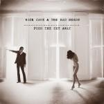24. Nick Cave and the Bad Seeds
Push The Sky Away
(Bad Seed Ltd)
While Nick Cave and some of the band had recorded as Grinderman in between this latest Bad Seeds’ record and 2008’s funky middle aged classic Dig, Lazarus, Dig! this was what many had been waiting for. A complete surprise in just how quiet it was, but just what a grower it also showed itself to be, proving to be heavy in its restraint. Few can lay claim to having made such an intelligently challenging and beautiful record this year, which explains its place here in our list. Once again, Cave’s lyrics are remarkable, as is the entire band’s musicianship. A band, which startlingly seems to somehow still just get better with time. A phenomenal achievement thoroughly deserved of the praise it received from all quarters. (Dominic Stevenson)
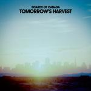23. Boards of Canada
Tomorrow's Harvest
(Warp)
It’s been quite a year for comeback albums, hasn’t it? Daft Punk released the long awaited Random Access Memories, My Bloody Valentine finally made a follow-up to 1991’s Loveless, and after 8 years of radio silence, Boards of Canada have finally returned to their number station on some desolate Scottish isle to bring us Tomorrow’s Harvest, the duo’s moodiest effort yet! Throughout Tomorrow’s Harvest, BoC gradually builds an ominous tone – a feeling that we are constantly sowing the seeds of our own destruction, a feeling of utter futility. But in the same sense, there’s an inherent grace found in the rubble of the end of days, one of renewal and hope. In the album’s final seconds, Semena Mertvykh slowly quiets and eventually suffocates amidst the thickness of its own silence. But even in the stratum of hush and death, there is the possibility that new seeds can take to the soil, and that something new can grow. (Andrew Ciraulo)
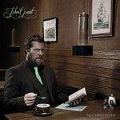22. John Grant
Pale Green Ghosts
(Bella Union)
American-born singer-songwriter John Grant has had more than his fair share of issues to deal with in his 44 years, from growing up gay in a religious household, to struggles with drugs and alcohol, a rocky romantic history and a recent HIV positive diagnosis, and he worked through most of these on Pale Green Ghosts, his second solo album. That he chose to do so in such a self-lacerating, yet also deeply ironic manner could suggest why the record found more favour with European audiences than that of his homeland. With Grant decamping to Iceland and wholeheartedly embracing the country’s music scene, it was possible to see his new home reflected back in the record’s chilly electronics, warm humour and searing honesty, the combination of which turned something that could have easily been a long, bleak slog into an album to be cherished. (Mark Davison)
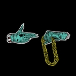21. Run The Jewels
Run The Jewels
(Fool's Gold)
As someone that’s been mostly disenchanted with hip-hop over the last ten years or so, Run The Jewels, the collaborative effort from rappers Killer Mike and El-P, had my immediate appreciation. A refreshing 33 minutes worth of verbal gymnastics, Killer Mike and El-P revel in the art form, trading verses with a fluidity I miss in modern hip-hop. As electricity courses through the mix, providing zippy tonal waves (36 Chain) or grand synthesized blasts (Get It), the album’s modern tone ably competes with both the recent sonic excursions found in Kanye West’s Yeezus and the experimental hijinks cultivated by Death Grips. Run The Jewels, though, is smooth and cohesive, enjoying plenty of head knock while providing an excellent platform for the rhymes woven throughout. In particular, the single Banana Clipper, which features a verse from Outkast’s Big Boi, boasts enough of the duo’s wordplay to convince one that this is partnership worth continuing. (Sean Caldwell)
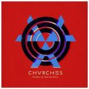20. CHVRCHES
The Bones of What You Believe
(Glassnote)
When CHVRCHES attained fifth place in the BBC’s ‘Sound Of’ poll at the beginning of the year, it elicited a collective, “who?”, amongst people much more au fait with the buzz acts of 2012 like Haim and AlunaGeorge. However, CHVRCHES’ 2013 has been positively stratospheric, winning friends and plaudits on both sides of the Atlantic with their fresh and innovative take on 1980s electro-pop. CHVRCHES’ sound is darker and more goth-influenced than the electro revival of the mid-2000s, and the brooding menace that looms in their songs gives them substance and intrigue. Up front, Lauren Mayberry’s fragile Glaswegian tones provide the perfect counterfoil to the walls of synths and rumbling bass, and hits like Recover and The Mother We Share show they’ve a song-crafting nous that belies the band’s relative infancy. Yet another act to add to Glasgow’s extraordinary roster of musical success. (Joe Rivers)
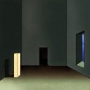19. Oneohtrix Point Never
R Plus 7
(Warp)
The uncanny valley is one of the stranger – and definitely creepier – byproducts of our rapidly advancing technological world, as the thinly blurring line between natural and artificial can lead to some beguiling emotional responses. OPN mastermind Daniel Lopatin has clearly shown interest in this – just look at his latest crop of bizarre music videos – but nowhere is this phenomenon more apparent than in his latest opus, R Plus 7. A fractured symphony of retro synths and dying Macintoshes, R Plus 7 takes some of the most crudely digital sound’s he’s ever implemented and brings them to life, with tracks like the amorphous Inside World and the brooding Still Life sounding distant and frozen yet vividly emotional and even spiritual. R Plus 7 is certainly a challenging album, but it’s also OPN’s most melodically sharp and richly rewarding experience to date – an album that’s as completely uncomfortable as it is inviting. (Peter Quinton)
18. Rhye
Woman
(Innovative Leisure)
For those of us old enough to remember the days when Sade was a four letter word, Rhye's emergence as one of last year's most hotly tipped new acts was a very strange development indeed. This was made even stranger by the subsequent revelation that the LA duo’s deeply sensuous, genuinely feminine sound was in fact the work of two men. Fortunately, there were no such surprises when it came to their debut album, as it more than delivered on that early promise. Despite the mystery and anonymity that the duo operated behind at first, Woman’s contents were fairly straightforward – its minimal, but exquisitely rendered tracks being heartfelt tributes to singer Milosh’s wife, that mixed a summery sense of airiness with delicately placed beats and brass arrangements, and just the right amount of lyrical darkness. (Mark Davison)
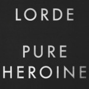17. Lorde
Pure Heroine
(Universal)
The New Zealand prodigy's debut album manages to strike a balance between addictive pop and thought-provoking lyricism. The two rarely go hand in hand, especially when the artist herself is so young. We never expect a teenaged phenom to give us quality; we're happy to settle for earworms. But even looking past the groundbreaking Royals, Pure Heroine hits every mark. Lorde's sultry layered vocals, the simple staccato percussion, the emotionally powerful synth bass lines, a truly impressive lyrical maturity... this is the recipe for a powerful album. Pure Heroine is about youth, but it's about the youth we actually remember in hindsight. Her honesty and self-awareness are overwhelmingly relatable. "I'm not in the swing of things/but what I really mean is/not in the swing of things yet." She will be. (Gabbie Nirenburg)
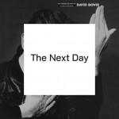16. David Bowie
The Next Day
(Columbia)
The first striking feature of Bowie’s return to recording after a decade’s absence was the cover. The famous image from the sleeve of 1977’s Heroes was reproduced and partially obscured by a stark white square. The connotation is clear: to obscure the past while simultaneously referencing it. As a visual signpost for the musical content of the album it’s pretty accurate. The closest reference points in terms of Bowie’s career are from the late 70s and early 80s – from Station to Station through to Let’s Dance. But there’s a surety here that is largely absent from his work in the 90s and 2000s, a coming to term with his own legend perhaps – a struggle Bowie has been engaged in since Ziggy. In that sense it almost has the feel of being a swansong. If it is, then it is a fitting one. If the music here was mediocre, or retro, then the hype would have been misplaced. But for once the minutely planned PR campaign that preceded and supported the album was entirely vindicated. (David Wood)
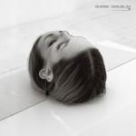15. The National
Trouble Will Find Me
(4AD)
Every time The National are set to release an album, someone (likely an Internet commenter) will wonder if this is the record where the band will change its sound. On Trouble Will Find Me, the answer is still no. Why? Because there is no need to fix what isn't broken. The National's latest continues a string of successful albums with the usual mix of moroseness and humor from Matt Berninger, tight guitar work from the Dessner twins and powerful rhythms from the Devendorf brothers. Songs like Don't Swallow The Cap, This Is The Last Time and Graceless are thrilling trips that build layers on top of layers, sometimes exploding, sometimes pulling back. Memorable melodies engulf nearly every number on the tracklist, making this record one of those rare affairs where skipping is unnecessary. That consistent excellence is what helps make The National one of the best bands playing today. (Joe Marvilli)
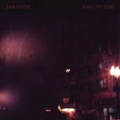14. Julia Holter
Loud City Song
(Domino)
Contemporary composer Julia Holter looks through the lens of Parisian high society in her profoundly ambitious third effort Loud City Song, which was loosely inspired by Vincente Minelli’s film adaptation of Colette’s novella Gigi. It wasn’t a surprising move for Holter, who has always looked for inspiration in the realms of mythology and fiction to base her avant-garde excursions upon. She’s always utilized her outward looking view to open up a sense of narrative continuity, making for brainy works of art that were mostly absent of a palpable voice. But even if Holter is one to never let us intrude into her personal space, the true entity of Loud City Song exists very much within – in cohabiting inside the rustle of bustle of everyday people and noise, and the struggle of resounding in such vast space. Describing such scope in musical form is what gives the album its grand musical gestures, a stimulating concoction of elastic electronics, a hint of jazz sophistication, and even scattered elements of new wave. And not once does it feel unwelcoming, allowing the outside noise to finally interact a little bit more closely with her boundless curiosity and introspective spirit. (Juan Edgardo Rodriguez)
13. Kurt Vile
Wakin' on a Pretty Daze
(Matador)
Imagine rising early without a care in the world. You’re at total peace with it. You’re on a plain with no obscuring undulations, and you’re as inland as inland can be. You sit back and watch the sun rise without an obstacle to impair its rays, and it immerses you with a niche take on paradise. This record has an unerring ability to formulate vivid scenarios within you, where nothing notable comes about other than pure content. There’s no urgency in Vile’s work, just warm, virtuous, uplifting guitars that intertwine with a captivating vocal and a convivial soundscape. Vile’s sprawling tracks that sometimes touch upon the 8-10 minute mark are anything but self-indulgent; it’s just that urgency isn’t something that sits at the forefront of Kurt’s mind. With the risk of throwing a cliché into the midst, this is one of those records you can literally listen to intently and wonder where the last hour has gone. (Carl Purvis)
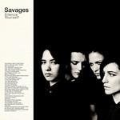12. Savages
Silence Yourself
(Matador)
How many other debutants arrived clutching a manifesto in 2013? The London quartet Savages demanded to be taken seriously from the outset, an approach that naturally led to no shortage of mockery. This ended abruptly when Silence Yourself exploded onto the scene, as fine an example of British post-punk as I've heard since the original movement fizzled out in the early 80s. The top-ranked debut album on our list in a year ruled by the established artist, Silence Yourself tells you everything you need to know about Savages. Manifestos are redundant when your music bristles with such intelligence and intent. (David Coleman)
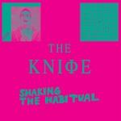11. The Knife
Shaking The Habitual
(Rabid)
That Shaking The Habitual is almost inarguably the year’s most ambitious record makes it especially impressive that from the first listen it’s full of great individual songs. But if The Knife’s opus was just jaw-dropping production – the fragile tribal sound of A Tooth For An Eye, the terrifying industrial atmosphere of Full of Fire, the glitch beats of Networking – and complex song structures, it would lose what makes it capital-G Great. Song titles reference everything from Margaret Atwood’s dystopian love story Oryx and Crake to articles by postmodern equity feminist Nina Björk. Soundscapes create industrial and environmentalist threats, productions blurs gender boundaries as siblings Karin Dreijer Andersson and Olof Dreijer become cyborgs, and lyrical density trades with extended interludes of ambient noise and uncomfortable collages. The Knife dare listeners to actively unpack and, with the closing song, even challenge the record. For those willing to meet the siblings on their battleground, rewards are endless. (Forrest Cardamenis)
10. Arctic Monkeys
AM
(Domino)
Dig the throbbing bass and bone-crushing drums: the Arctic Monkeys haven’t sounded as tough since 2009’s Humbug. This time, though, the songs are stronger. Do I Wanna Know? has the gunfighter swagger of a Sergio Leone film; Arabella sizzles with a killer heavy metal hook; No.1 Party Anthem has the goods to become one. The Monkeys broaden their sound with T. Rex riffs and Stone Roses vibes on songs like I Want It All and Fireside, but Alex Turner’s singular vision is kept intact. His nimble word-play on Why’d You Only Call Me When You’re High and R.U. Mine? mixes hip-hop confidence, intimate longings, and sparks of self-doubt. The success of the album points the way to further collisions of moods and sounds. (Angel Aguilar)
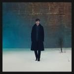9. James Blake
Overgrown
(Republic)
After the success of James Blake’s self-titled debut, speculation was rife as to what direction he would head next without the shock of the new behind him. Would he become even more experimental or would he move further towards the mainstream with more traditional song structures? Somehow, he managed to do both, and in the process picked up yet more critical acclaim and a Mercury Music Prize victory. The studied, careful building of textures remains, as does the strong influence of electronica, but there’s more of a nod to hip-hop this time round and, in Retrograde, there’s the closest thing to a pop song he’s ever written (it even has what you might consider a chorus). Collaborations with RZA and Chance The Rapper hint at what lies next for Blake, but as Overgrown demonstrates, we can never quite be sure. (Joe Rivers)
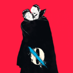8. Queens of the Stone Age
...Like Clockwork
(Matador)
Following six years of silence and a near-death experience, Queens of the Stone Age returned with ...Like Clockwork, an introspective, emotional and (mostly) solid masterwork carried to fruition by renewed partnerships (Dave Grohl, Mark Lanegan, Nick Oliveri) and some of the most impassioned vocals Josh Homme has performed. Though Homme remains loyal to his band being supported by an ever-revolving cast of players, ...Like Clockwork sounded less the results of creative interaction than the personal output of its key player, wounded tracks like The Vampyre of Time and Memory and I Appear Missing the musical testament to a mortality that had nearly slipped away. This is not the energized output most typically associated with Queens of the Stone Age, though Homme’s flair for instrumental invention is still found in the charred blues of Keep Your Eyes Peeled, the soloing in I Sat By the Ocean and the enlivening My God is the Sun. (Sean Caldwell)
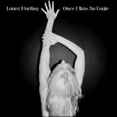7. Laura Marling
Once I Was An Eagle
(Virgin)
Remember the precocious 18-year-old behind Alas, I Cannot Swim? I’d never have expected Laura Marling to reach album four, let alone for her to have made such leaps forward as a songwriter. But what absolutely bowls me over about Once I Was an Eagle is Marling’s vocals. Her lyrics are often cryptically nonspecific, big-picture in a way it could be difficult to latch on to if she wasn’t singing with an intimacy like she’s whispering across your pillow. The album’s soaring closer, Saved These Words, melodically loops back to the four-songs-in-one suite which opens the record: “Thank you naivety, for failing me again”, she proclaims, more Shakespearian soliloquy than song form. On the contrary: listening to Once I Was An Eagle in its cohesive entirety is to brush against Marling’s seemingly limitless wisdom. (Stephen Wragg)
6. Arcade Fire
Reflektor
(Merge)
It’s not immediately apparent, but Arcade Fire has been building to Reflektor their whole career. A sprawling concept album about how we listen to/interact with music in the digital era, an appropriation of an ancient Greek myth, and an open question to what will become of our fractured selves at a time when most of us exists in the public space of social media, Reflektor also reveals through sequencing and lyrics that the band’s previous albums are stories about searching for origin, the exploration of imagined personal frontiers, and false nostalgia – all subjects rooted in a post-9/11, digitally-obsessed world. That Reflektor does it through love stories and rara-influenced rock songs is, to say the least, no minor feat. Indeed, the songs are as valuable as the overarching concept: The tempo changes of the infectious Here Comes The Night Time, the irony-tinged swagger of Normal Person, and the epic scope and emotional outpour of Awful Sound and It’s Never Over make Reflektor Arcade Fire’s best collection of songs since Funeral. (Forrest Cardamenis)
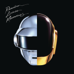5. Daft Punk
Randon Access Memories
(XL)
From a picture of the Daft Punk helmets being published online, to the first play of the Get Lucky riff in an advertisement on Saturday Night Live, to the release of Random Access Memories just weeks later, one of the largest album marketing campaigns in recent years was meticulously planned and highly effective, fuelling excitement for an already highly anticipated return from Daft Punk; their first studio album of new material in eight years. In many ways, RAM feels as intentional as the campaign leading to its release. It’s an homage to electronic music through the ages, a celebration of the genre and those who helped to build it. Paradoxically, in drawing more on their influences, Daft Punk are more inventive than ever, and the result is nothing short of spectacular, cementing Daft Punk’s position as one of the most important electronic artists of our time. (Craig Stevens)
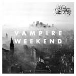4. Vampire Weekend
Modern Vampires of the City
(XL)
Eternally picked on for their Ivy League yacht-punk, Vampire Weekend almost instantaneously became one of those bands that was easy to love despite being made the subject for scornful derision. Seven year and three consecutive solid albums later, they’re proven to the naysayers that all it takes to prove them wrong is the ability to write a thoughtfully crafted song...and repeat it. Perhaps Contra may be considered the wild card in their discography, but Modern Vampires of the City is unquestionably their crowning achievement – a shrewd meditation on mortality that never fails to hit the mark with an embarrassment of lyrical riches. It even does so without sacrificing much of their intriguing hybrid of sounds; the delivery is a tad tamed and subdued but they’re in step with evolution, embracing maturity without forgetting that their compositional quirks is what piqued everyone’s attention in the first place. They can now be regarded as an important act, and not because they make music press headlines with zany BBC 1 appearances, declarations in defense of the selfie, or deliberately prosaic takes on major media moguls. Once you popped it in your stereo, all the utter nonsense they spout (ahem, Ezra Koenig spouts) in an effort to appear more relatable with the masses fades into white noise. At the end of the day the music is the genuine guide to Vampire Weekend's artistry, a valuable lesson many could learn from them. (Juan Edgardo Rodriguez)
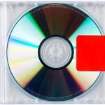3. Kanye West
Yeezus
(Def Jam)
As crass and egomaniacal as it may sound, Kanye West’s self-proclaimed status as “the nucleus of culture” isn’t as farfetched as some may think. After crafting a bona fide rap touchstone with 2010’s My Beautiful Dark Twisted Fantasy, West polarized listeners this year with his latest effort, Yeezus – an amalgamated ego-blast, both equal parts creative genius and self-congratulatory mosaic. Surely this is an album that must provoke a dichotomous response, and has certainly earned a gratuitous amount of internet bleating with such egocentric statements as “I am a God.” And in a way, the more we respond to West’s brash head-trips, the firmer his grip on the pop culture unconscious becomes. But truly, this all doesn’t matter if the songs aren’t there. Fortunately for us, West is in magnificent form. On Yeezus, West combines elements of industrial, electronic, and punk into one blustering experience that is certain to make an impression on even the most unsympathetic listener. (Andrew Ciraulo)
2. Janelle Monae
The Electric Lady
(Bad Boy / Wonderland Arts Society)
What an absolute treat Janelle Monae is. Skipping from genre to genre with deft aplomb, she is equally impressive as a soul songstress, a disco diva, a pop star, an emcee, a soft-shoe dancer, a Sinatra-style crooner. A true Electric Lady, Monae has interwoven a radio call-in theme throughout her sophomore release, so believable yet so outrageously sci-fi. It's a charming concept that never comes close to overwhelming the album's perfect mix of electrifying futuristic pop and soulful homages to lounge singers past. (I for one will be sorely disappointed if Monae doesn't score the next James Bond flick, because the pairing would be absolute magic.) So transport yourself from the 40s to the 70s to the distant future and back again. "Clones and humans welcome after midnight." Let's dance. (Gabbie Nirenburg)
1. My Bloody Valentine
mbv
(Self-released)
Boards of Canada, Daft Punk, Bowie – their career breaks start to resemble brief vacations when compared to My Bloody Valentine's great disappearing act. When mbv arrived, unexpectedly and somewhat awkwardly, on a Saturday night in February, it finally answered one of popular music's great unanswered questions: what on Earth comes after Loveless? The answer, of course, is better than anyone could have imagined – a three part masterclass of texture, melody, and rhythm, which features everything you ever loved about My Bloody Valentine without sounding like it was excavated from an early 90s time capsule. mbv was the first My Bloody Valentine music I'd actively listened to since December 2009, when I overdosed on shoegaze by seeing the band live three nights in a row. It was, and still is, an absolute revelation, a deserved number one record in a year crammed full of worthy contenders. (David Coleman)
. . .
That concludes the list-making festivities for 2013. Now let the debate begin in the comments below...
24 December, 2013 - 05:52 — No Ripcord Staff